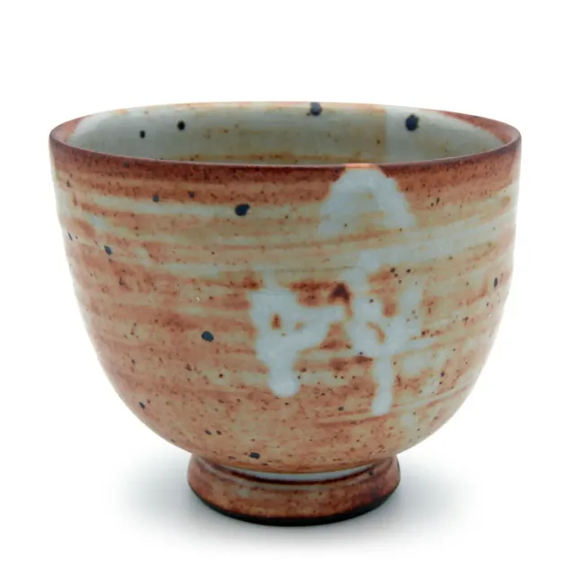
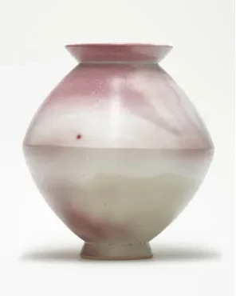
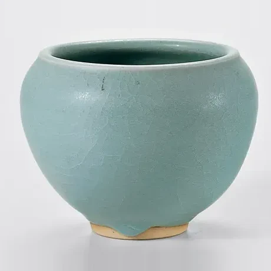
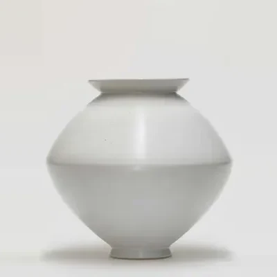

Immer sind es Schalen, und doch ist keine wie die andere.
Thomas Wagner über die Schalen von Young-Jae Lee
Keramische Werkstatt Margaretenhöhe. Gedrehte Gefäße und Gebrauchsgeschirr aus Essen – seit 1924, heute auf dem Gelände der Zeche Zollverein.
Immer sind es Schalen, und doch ist keine wie die andere.
Thomas Wagner über die Schalen von Young-Jae Lee
Keramische Werkstatt Margaretenhöhe. Gedrehte Gefäße und Gebrauchsgeschirr aus Essen – seit 1924, heute auf dem Gelände der Zeche Zollverein.




Aus der ständigen Wiederholung einer handwerklichen Technik, dem Drehen auf der Töpferscheibe, erwächst die vollkommene Schönheit einer Form.
1924 auf Initiative von Margarete Krupp für die Siedlung Margaretenhöhe gegründet. Seit 1927 den Formprinzipien des Bauhauses verpflichtet – über Otto Lindigs Schüler Johannes Leßmann.
Seit 1986 geprägt von Young-Jae Lee: Meisterstücke aus ihrer eigenen Hand und ein Geschirr, das seitdem nahezu unverändert in der Werkstatt gedreht wird.
Young-Jae Lee

„Sie erzählte von den Zeremonien in den Tempeln, dem Ritual eines hundertfachen Niederkniens, Niederfallens vor den Buddha-Statuen. Sie erzählte von ihrer Großmutter, die sich diesen geistig-körperlichen Übungen bis ins hohe Alter unterzog. Daran habe sie sich immer wieder erinnert, während sie ihre Schalen drehte, eine nach der anderen, ohne je darüber müde zu werden.“
„Die minimale Veränderung ist Young-Jae Lees unbegrenzter Freiraum – in der Form wie in der Farbigkeit der Glasur und der Bemalung. Ihr geht es nicht um Formerfindung, sondern um die Individualität des Gefäßes.“
Zwei Traditionen treffen sich in ihren Gefäßen: die Ideen des Bauhauses, denen sie sich verpflichtet fühlt – und ihr koreanisches Erbe, „das heitere, schwerelose Empfinden für die Form und die subtilen Farben“.Gisela Jahn, »Gefäße drehen, Gefäße betrachten, Gefäße benutzen«
- 1951Seoulgeboren; Studium an der Hochschule für Kunsterziehung
- 1973WiesbadenKeramik bei Margot Münster, Formgestaltung bei Erwin Schutzbach
- 1978Sandhauseneigene Werkstatt bei Heidelberg
- 1987EssenLeitung der Keramischen Werkstatt Margaretenhöhe
- 2016BreslauEhrendoktorwürde der Eugeniusz-Geppert-Akademie
Meisterstücke
Von Young-Jae Lee selbst gedreht, bemalt und glasiert. Feldspatglasuren, gebrannt im Gas- oder Holzofen bei etwa 1300 °C.
Alle Meisterstücke Spindelvase2006/07H 35,5 cm, D 37 cmPetalit-Eichenasche-Feldspat-Glasur · Holzofen 1260 °C
Spindelvase2006/07H 35,5 cm, D 37 cmPetalit-Eichenasche-Feldspat-Glasur · Holzofen 1260 °C Kumme1995H 18 cm, D 14,6 cmPetalit-Eichenasche-Glasur · Holzofen
Kumme1995H 18 cm, D 14,6 cmPetalit-Eichenasche-Glasur · Holzofen Schale, spitz2003–05H 10,5 cm, D 21,5 cmStrontium-Feldspat-Glasur
Schale, spitz2003–05H 10,5 cm, D 21,5 cmStrontium-Feldspat-Glasur Kugelvase1996H 25 cm, D 32,5 cmBarium-Feldspat-Glasur · Holzofen
Kugelvase1996H 25 cm, D 32,5 cmBarium-Feldspat-Glasur · Holzofen Bettelmönchschale1988H 10,2 cm, D 13,6 cmBarium-Feldspat-Glasur · Gasofen
Bettelmönchschale1988H 10,2 cm, D 13,6 cmBarium-Feldspat-Glasur · Gasofen Zylindervasen, groß2003H ca. 30 cm, D ca. 11,5 cmPetalit-Eichenasche-Glasur · Holzofen
Zylindervasen, groß2003H ca. 30 cm, D ca. 11,5 cmPetalit-Eichenasche-Glasur · Holzofen Schale, spitz, XXL2003–05H 10,5 cm, D 22,5 cmPetalit-Eichenasche-Glasur
Schale, spitz, XXL2003–05H 10,5 cm, D 22,5 cmPetalit-Eichenasche-Glasur Große Schale1994H 9,5 cm, D 53,5 cmWollastonit-Feldspat-Glasur · Gasofen
Große Schale1994H 9,5 cm, D 53,5 cmWollastonit-Feldspat-Glasur · Gasofen
Ausstellungsorte
Ausstellungen seit 1980 in Europa, Korea, Japan und den USA.
Alle Ausstellungen-

Köln
- Museum für Ostasiatische Kunst
- Galerie Karsten Greve
- Kunst-Station Sankt Peter
- Galerie Udo Adam-Pasquale
-

München
- Galerie Jahn und Jahn
- Galerie Handwerk
- Bayerischer Kunstgewerbeverein
-

Tokio
- Gallery Tohkyo
- LIVING MOTIF
-
Essen
- Museum Folkwang
- Kokerei Zollverein
- Kunsthaus Essen
-

Korea
- Gwangju Museum of Art
- Ha Jung-woong Museum of Art
- Shinsegae Gallery
-
Boston
- Pucker Gallery
-

Krakau und Breslau
- Manggha Museum
- Architekturmuseum Breslau
- Galeria NEON
-
Chemnitz
- Stadtkirche St. Jakobi
-

Bonn
- Galerie Gisela Clement
- ENTERVENTIONALE
-

New York
- David Nolan Gallery
-

Düsseldorf
- Hetjens-Museum
-

Wien
- MAK – Museum für angewandte Kunst
-

Zürich
- Raum 49
Städte und Zahlen nach der Ausstellungsliste 2016 bis 2026.

Die Herstellung jedes neuen Gefäßes gleicht einer Meditation.
Für Young-Jae Lee ist – in Anlehnung an die koreanische Tradition – nicht die ständige Neuerfindung von Formen entscheidend, sondern die vollkommene Beherrschung des vorhandenen Repertoires. Erst mit der Verinnerlichung der Formen wird die tägliche Arbeit an der Drehscheibe jenseits aller Routine zu einer Art Exerzitium. Die Persönlichkeit beginnt einzufließen, das Individuelle drückt sich im Handwerklichen aus.
Ein Ring aus Teilchen um eine leere Mitte.
„Schalen über Schalen, einfach auf den Boden gestellt. Ein Meer aus Schalen, ein Feld aus Kelchen, ein Ring aus Teilchen um eine leere Mitte, eine kleine Milchstraße voll schimmernder Gefäße.“
Thomas Wagner, »Die aufgehobene Zeit?«
99 Schalen
„99 Schalen – ein Kosmos“
Museum für Ostasiatische Kunst, Köln
bis 25. Oktober 2026
„99 Schalen – ein Kosmos“
Museum für Ostasiatische Kunst, Köln
bis 25. Oktober 2026
Keiner Mode, keinem Zeitgeist unterworfen.
Unter Rückbesinnung auf die Grundprinzipien des Bauhauses entwickelte Young-Jae Lee mit Hildegard Eggemann, Michael Schmandt und Claudia Neumann die Formensprache des Manufakturprogramms: zuerst 25 Grundelemente eines Geschirrs – Teller, Schalen, Krüge.
„Jedes Stück muss gut zu drehen sein und auch zu benutzen. Alle Teile eines Geschirrs, gleich welcher Farbe, sollten miteinander kombinierbar sein.“
In monatelangen Experimenten entstand die sechstonige Farbskala – von Schattierungen des Jadegrün über ein gebrochenes Weiß bis zu Rostbraun.

- Masse
- Westerwälder Steinzeug, auf der Töpferscheibe gedreht
- Schrühbrand
- Elektroofen, etwa 950 °C
- Glasurbrand
- Gasofen, ca. 1300 °C, reduzierende Atmosphäre
- Programm
- Vom Teller bis zum Krug, dazu die Edition mit Vasen, Pflanzgefäßen und Dosen
- Gebrauch
- Alle Stücke sind spülmaschinenfest

Neun bis zehn Stunden Feuer.
Im Holzofen wird über neun bis zehn Stunden kontinuierlich bis auf 1300 °C gefeuert – für einen Brand braucht es etwa 1,5 Festmeter Holz. Die Tönung wird reicher, manche Verfärbung lässt sich nicht steuern.
Wie die Glasur ihre Farbe bekommtHundert Jahre an der Scheibe.
- 1924
Margarete Krupp realisiert die Siedlung Margaretenhöhe in Essen. Hermann Kätelhön initiiert eine Keramikwerkstatt auf dem Gelände, Leiter wird Will Lammert.
- 1927
Johannes Leßmann, Schüler des Bauhaus-Keramikers Otto Lindig, stellt auf Serienkeramik um – und verschafft der Bauhaus-Idee im Ruhrgebiet Breitenwirkung.
- 1933
Umzug in ein Gebäude der Zeche Zollverein.
- 1944
Walburga Külz, ebenfalls Schülerin Otto Lindigs, übernimmt die Leitung.
- 1953
Helmut Gniesmer stellt das Programm vorwiegend auf Baukeramik um.
- 1986
Young-Jae Lee und Hildegard Eggemann übernehmen die Leitung und nehmen das Manufakturprogramm wieder auf.
- 1987
Umzug in das Baulager der Zeche Zollverein, heute Weltkulturerbe.
- 2006
Young-Jae Lee übernimmt die Werkstatt von der RAG Aktiengesellschaft und führt sie als Geschäftsführerin.
Die Werkstatt ist offen.
Wenn Sie Stücke aus unserem Programm erwerben möchten, senden wir Ihnen gerne weitere Informationen oder ein Angebot zu. Oder Sie kommen vorbei.
| Montag bis Freitag | 9–17 Uhr |
|---|---|
| Samstag | 11–15 Uhr |
| Sonst | nach Vereinbarung |